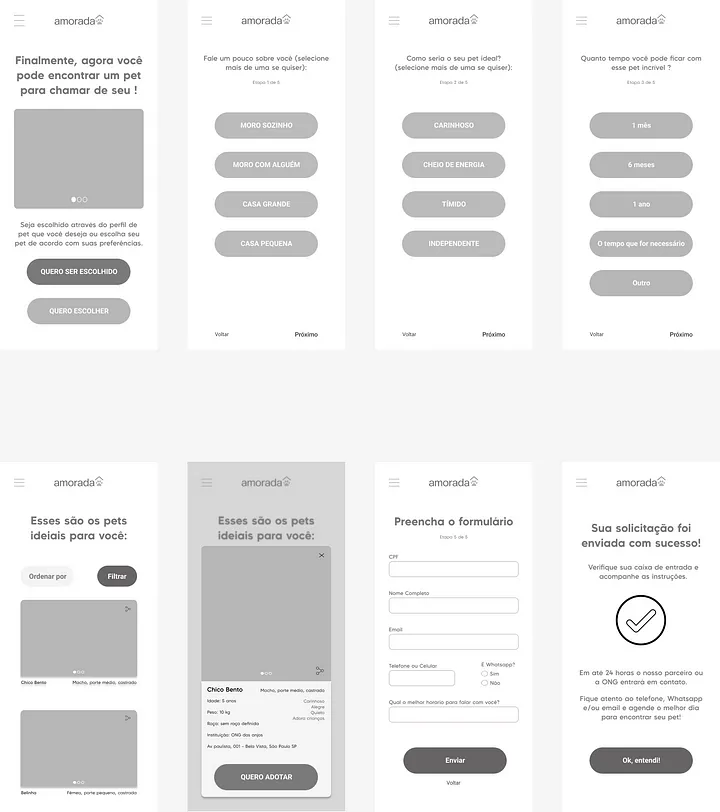

PROJETO AMORADA
A OMS estima que haja 30 milhões de cães e gatos abandonados no Brasil
Segundo o Instituto Pet, em 2022 haviam 400 ONGs de proteção animal no país, a maioria na região sudeste. Essas ONGs tutelam mais de 184 mil animais
As pessoas que resgatam não tem apoio financeiro do poder público
DESAFIO: Criar uma solução digital para ajudar a doação de animais resgatados por ONGs
1- Entendimento
O intuito é entender o problema e o objetivo da solução que será construída. A estratégia é iniciar o projeto envolvendo os integrantes do time, levantar o que se sabe (ou não) sobre o assunto e alinhar expectativas.
Matriz CSD
Ferramenta escolhida para levantar certezas, suposições e dúvidas que mais adiante serão uma base para as pesquisas a serem realizadas, pois dessa forma obtém-se as confirmações necessárias.
Clique aqui para acessar a matriz CSD completa.
É/não é, faz/não faz
Ferramenta escolhida para entender o objetivo da solução que será construída. Foi essencial para distinguir os assuntos e não fugir do foco, pois assim como as ações “adotar” e “doar” me confundiram algumas vezes, os integrantes de um time podem ter ideias diferentes sobre o que a solução irá ser/fazer ou não.
.png)
Clique aqui para acessar a matriz É/não é, faz/não faz.
2- Pesquisa
O objetivo é coletar informações e evidências, verificar veracidade e relevância, eliminar achismos. A estratégia é mapear o mercado, saber o que já existe, o que funciona (ou não), saber quem é o usuário, obter insights para a etapa de definição.
Desk research
Iniciei a etapa de pesquisa dessa maneira, pois é acessível e obtém informações reais e sem deslocamentos. Otimizou o tempo e eliminou possíveis perguntas na pesquisa de campo por exemplo, focando no que é realmente necessário saber.
Clique aqui para acessar a pesquisa.
Resumo do benchmark
Fiz um mapeamento do mercado e possíveis concorrentes. Possibilitou verificar pontos fortes e a desenvolver das soluções já existentes. Pesquisei ONGs, plataforma online de adoção, serviço de adoção da prefeitura de SP, institutos e iniciativas criadas por grandes lojas de produtos pet. Foram levantados 2 principais meios de fazer doação de animais: presencial e online/híbrido. Existe também o apadrinhamento e o lar temporário, que já são realizados em diversas ONGs, mas não têm uma boa divulgação.
Pesquisa de mercado
Pesquisa quali e quantitativa desenvolvida através do Google Forms, por ser acessível e relativamente fácil de se trabalhar. O objetivo é verificar suposições/dúvidas da matriz CSD, entender como ONGs doam animais e como as pessoas adotam (ou gostariam de adotar), validar qual tipo de adoção seria mais utilizada pelos adotantes.
RESUMO DA PESQUISA
Nenhuma ONG apontou Aplicativo e/ou Whatsapp como meios de doação; Nenhum respondente informou que gostaria de adotar através de aplicativo; Mesmo as pessoas que já tem animais adotariam; Mais da metade dos respondentes da pesquisa afirmam que abrigariam temporariamente um animal, caso a ONG se comprometesse a buscá-lo na data combinada e ele não fosse adotado antes.
Clique aqui para acessar a pesquisa.
3- Definição
O objetivo é entender como possíveis soluções resolveriam o problema, cenários de uso, quem usaria, como essa solução funcionaria, de que forma trará retorno para a empresa. A estratégia é definir prioridades a partir da visão geral e insights trazidos pela pesquisa, fechar o escopo, definir qual será a solução.
Persona
Criei as personas para representar o usuário com base nas pesquisas anteriores, fica mais fácil de visualizá-lo e entender como a solução se encaixa melhor em suas necessidades.

Pixar storytelling
Utilizei para entender contextos, como o usuário utilizaria o produto e expressar o valor entregue de forma simplificada. Considerei os melhores resultados obtidos na pesquisa de mercado, sendo o mais viável utilizar: site e/ou redes sociais.
“Diego mora com os pais e possui autismo. Todos os dias ele trabalha home office e se sente sozinho já que seus pais são comerciantes e passam o dia fora.
Certo dia ele viu uma publicação em uma rede social, acessou o site e descobriu que poderia receber animais em sua casa pelo tempo que quisesse. Assim, ele abrigou temporariamente alguns animais ao longo do ano, até que se apaixonou pelo ‘Sabão’, seu novo amigo de 4 patas e decidiu adotá-lo definitivamente.
Diego o levava para passear a noite nos parques e ruas, criando um hábito. Até que finalmente ganharam a confiança um do outro e agora são inseparáveis. Diego começou a fazer caminhada e ganhou qualidade de vida.”
Service Blueprint
Fiz um mapeamento para ter uma visão geral dos processos envolvidos na doação de animais, as ações da ONG e adotante, pontos de contato, recursos, etc, já considerando o site e as redes sociais que serão complementares.

Clique aqui para acessar o Service blueprint.
4- Arquitetura da informação
O objetivo é organizar os elementos e criar uma estrutura hierárquica do que será a solução com base no entendimento gerado pelas etapas anteriores. A estratégia é priorizar as informações, necessidades e funcionalidades para que seja o mais simples possível e evitar adicionar itens desnecessários. Fazer acessível e deixar em evidência os conteúdos mais importantes, criar os CTA - call to actions.
Sitemap
Desenvolvi o mapa do site para listar todas as páginas e ter uma visão geral dos conteúdos.

Wireframe
Desenvolvi o esqueleto do projeto para organizar o conteúdos específicos de cada página do site, realizando um estudo funcional das telas para que tenham somente o indispensável. Wireframe de algumas telas do projeto:


5- Visual design
Style guide: padrões visuais do site contendo cores (contraste em conformidade com WCAG), tipografias (calculadas através do Modular scale), botões e suas aplicações.

Telas do site: alguns exemplos de telas desenvolvidas no projeto


6- Protótipo
O protótipo navegável do projeto foi construído no Figma e dispõe de algumas telas com interações simples.
Clique aqui para acessar o protótipo navegável.
7- Validação
ACESSIBILIDADE
O contraste foi validado através do site https://contrastchecker.com/ tornando possível a leitura para pessoas com baixa visão, de acordo com os critérios de acessibilidade WCAG.
LEIS DA PSICOLOGIA DO UX DESIGN
Algumas aplicações de conceitos de psicologia do ux nesse projeto foram:
Botões interativos grandes: alvos maiores e próximos para que o usuário tenha uma navegação mais rápida (principalmente os CTA — Call to action), seguindo a lei de Fitts;
Interface simples: as telas contém apenas o indispensável, eliminando estímulos e decisões excessivos. Dessa forma evita esforço, memorização e tempo elevados do usuário, seguindo a lei de Hick, Miller e Parkinson;
Agradecimento
Obrigada a todos que leram esse projeto e também aos que responderam as pesquisas.